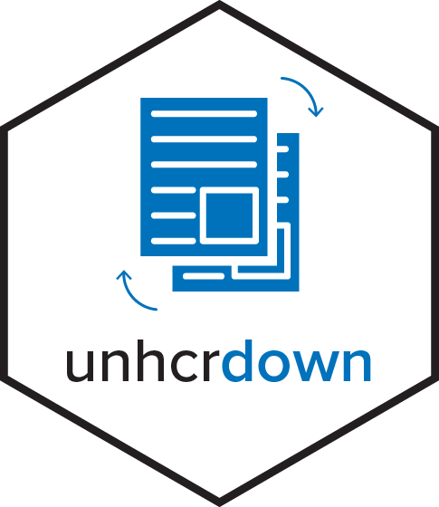

unhcrdown 
Streamline your document creation process with the unhcrdown R package. It provides a comprehensive set of templates designed to align your reports and presentations with UNHCR’s brand guidelines. This package offers ready-to-use R Markdown templates for various document types, ensuring consistent UNHCR visual identity across your communications.
Features
- A collection of professional templates following UNHCR brand guidelines
- Ready-to-use formats for reports, presentations, and websites
- Easy-to-use functions that work seamlessly with R Markdown
- Consistent styling across all document types
Installation
Get started by installing the unhcrdown package from CRAN with:
install.packages("unhcrdown")Or retrieve the development version from Github using the pak package:
# If pak is not yet installed, uncomment the following line:
# install.packages("pak")
pak::pkg_install("unhcr-dataviz/unhcrdown")Usage
The unhcrdown templates are designed for R Markdown projects, any of the available format can simply be added to output parameter of the R Markdown yaml header. For example:
---
title: "UNHCR Branded Report"
author: "First Last Name"
date: "`r Sys.Date()`"
output: unhcrdown::paged_report
---Available Formats
-
PDF Reports: Two HTML to PDF options:
-
Word Documents: Professional reports using
officedown::rdocx_document -
PowerPoint: Presentation slides
-
HTML Slides: Web presentations
-
HTML Page: Web based documents
RStudio Integration
Create new documents directly from RStudio:
- File → New File → R Markdown
- Select “From Template”
- Choose any unhcrdown template
Additional UNHCR Tools
- unhcrthemes: UNHCR branded ggplot2 theme and color palettes
- refugees: Access to UNHCR Refugee Data Finder API
- quarto-html-unhcr: Quarto extension for UNHCR branded HTML documents
- quarto-revealjs-unhcr: Quarto extension for UNHCR branded presentations
- Data Visualization Platform: UNHCR’s data visualization guidelines and tools
Acknowledgements
We extend our gratitude to the creators of the pagedown package that influenced the development of unhcrdown.
Contribution and Code of Conduct
Contributions to unhcrdown are highly valued. To ensure a welcoming and inclusive community, we follow our Contributor Code of Conduct. If you have suggestions, uncover bugs, or envision new features, kindly submit an issue on GitHub.
License
This package is distributed under the MIT License.